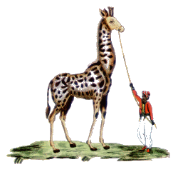

|

UNA COMMEDIA PER ROSA
Il Nuovo Corriere Senese pubblicò nel supplemento al n. 33 del 13 agosto 1989, un racconto di Bruno Tanganelli (Tambus).
Bisogna pertanto considerare i riferimenti temporali rapportati al 1989 e non ad oggi.
Sotto l'impulso della commedia che sto scrivendo mi è stato chiesto di scrivere qualcosa di Palio, di Palio passato.
Perciò non posso esimermi dall'influenza e racconterò un ricordo del tutto personale.
Buracchi Giuseppe, socialista di vecchio stampo, detto Bosco. Il "mi' nonno" arrivò nella Giraffa da Sant'Angelo in Colle nel 1896, come si può leggere nei verbali del tempo.
La famiglia si divise in due tronconi: i maschi Primo, Angiolino, Terzilio e la mi' nonna diventarono Brucaioli.
Fernanda, la mi' zia Rosa la mi' mamma e Bosco divennero Giraffini.
Rosa sposò il 19 novembre 1919 Antonio Tanganelli che comprò il quartiere proprio davanti alla sede attuale della contrada, dove siamo nati io, il mi' fratello e tutti i nostri figlioli.
Come si può notare il loro destino era legato al numero che distingue la Giraffa: il 19.
In breve tempo il mi' babbo diventò Consigliere, ma nel 1923, noi s'era appena nati, la mi' mamma rimase vedova.
Pur nel grande dolore conservò intatto l'amore per la Contrada.
Prova ne fu la lettera che ebbe a scrivere alla Giraffa in quella triste circostanza: Spettabile contrada della Giraffa Io sottoscritta vedova del compianto Tanganelli Antonio, socio di codesta Contrada, ringrazio tutto il rione ed appartenenti alla Giraffa, della sincera manifestazione di cordoglio, nella sventura che mi ha colpito. Ringrazio anche per i sentiti auguri per la guarigione di mio padre.
Possono inoltre contare sulla mia fede nella contrada che sarà per me un rispetto e una venerazione per Lui, riserbando sulla Giraffa l'attaccamento mio e dei miei figli nativi nel rione.
Ringraziando mi dico devotissima
-- Buracchi Rosina --
Siena 19/2/1923
Il tempo passò e noi si crebbe.
Nel 1936 anche Rosina ci lasciò. Il mio destino fu quello di diventare "commendatore" di Via Campansi, al "Ricovero di mendicità ospizio cronici asilo giovanetti abbandonati".
Poi la guerra mi portò lontano, in Africa. Il ritorno non fu solo un ritorno a casa, ma un rientro in Contrada.
Mi vestii per la prima e unica volta per entrare in piazza e la Giraffa vinse il Palio della Repubblica.
Mio fratello in seguito diventerà Priore della contrada.
Io non farò carriera, ma con grande gioia i Giraffini di oggi mi hanno eletto a vita Maggiorente della contrada.
La storia sarebbe lunga, ma voglio ritornare all'emozione che ho provato quando l'archivista mi ha consegnato la fotocopia della lettera scritta dalla mi' mamma.
Mi sono rivisto ragazzo correre per le strade, libere dalle macchine, ho rivisto tanta gente del rione che essendo poverissima faceva a gara per conservare le monture negli armadi di casa (non c'erano i musei di oggi a quei tempi) oppure fornire la corrente per le feste di contrada; fra queste persone voglio ricordare la mi' suocera Annita Masi che per me nel dopoguerra è stata come una seconda mamma.
C'era nell'aria che respiravamo un calore umano che man mano è andato a finire, ci si amava, ci si odiava, ma ci si conosceva.
Questo ora non è più, cosa si può fare perché la passione Contradaiola, con lo smantellamento dei rioni, non debba divenire tifo… bello sarebbe organizzare delle veglie con i "grandi vecchi" delle Contrade, io ho visto che i giovani ascoltano volentieri le nostre storie, se non altro potrebbe servire che qualcuno in futuro racconti ad altri ricordi che altrimenti si perderanno nella notte dei tempi.
|